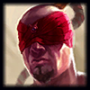

Bảng Ngọc Lee Sin mùa 13 và Cách Lên Đồ mạnh nhất
Leesin mùa 13 dồn sát thương mạnh và độ cơ động cao do đó đang có Meta Lee Sin đường đơn. Cộng bảng ngọc bổ trợ Lee Sin mùa 13. Kết hợp Cách lên đồ Lee Sin solo kill. Cách chơi hiệu quả nhất Video combo tại Kicdo.
Bảng ngọc Lee sin Rừng với Win 69.1% và Pick 11%
Bảng ngọc Lee sin Aram với Win 68.1% và Pick 64%

Điểm mạnh & yếu Lee Sin
Điểm mạnh:Dọn lính và quái nhanh.
Sở hữu sát thương diện rộng và cả sát thương trên 1 mục tiêu.
Chuyên dùng để đi cướp rồng và baron.
Đi cướp rừng vì giai đoạn đầu trận cực khỏe, cơ động.
Dùng nội năng nên thoải mái spam skill.
Có thể lên đồ theo lối đấu sĩ vừa có sát thương vừa chống chịu tốt.
Bắt AD, AP địch nhờ combo ở trên.
Kiểm soát bản đồ tốt.
Yếu về cuối trận.
Cực khó chơi phải tập luyện nhiều.
Tính toán nội năng vừa đủ để dùng combo nếu thiếu thì thành thằng hề ngay
Thông tin tướng Lee Sin
Lee Sin là một bậc thầy võ thuật cổ xưa của Ionia, truyền bá tinh linh rồng qua võ thuật. Tuy bị mù nhưng nắm đấm rực cháy và những cú đá vòng tròn rực lửa thì đầy uy lực.
Linh hồn Rồng được người Ionians tôn tính nhất được coi là biểu tượng của sự tái sinh. Leesin được đồn đoán là người có thể điều khiển linh hồn rồng. Anh đến tu viện Shojin khi còn là một đứa bé với tính khí kiêu ngạo anh đã phạm lỗi đánh tê liệt người hướng dẫn anh.
Anh lên đường chuộc lỗi khi đến Freljord anh gặp Udyr và chia sẻ cách điều khiển rồng. Bất ngờ đế chế Noxus tấn công xâm chiếm Ilonia. Và đột nhập đại sảnh Hirana tại đây LeeSin không điều khiển được rồng và bị mù.
Câu nói thường thấy của Lee Sin : "Enlightenment is knowing the value of one’s ignorance."
Hi vọng với hướng dẫn cách lên bảng ngọc Lee Sin đi rừng và cách lên đồ Lee Sin theo phong cách của Sofm bạn sẽ thuộc lòng các combo solo kill dồn dame mạnh nhất.